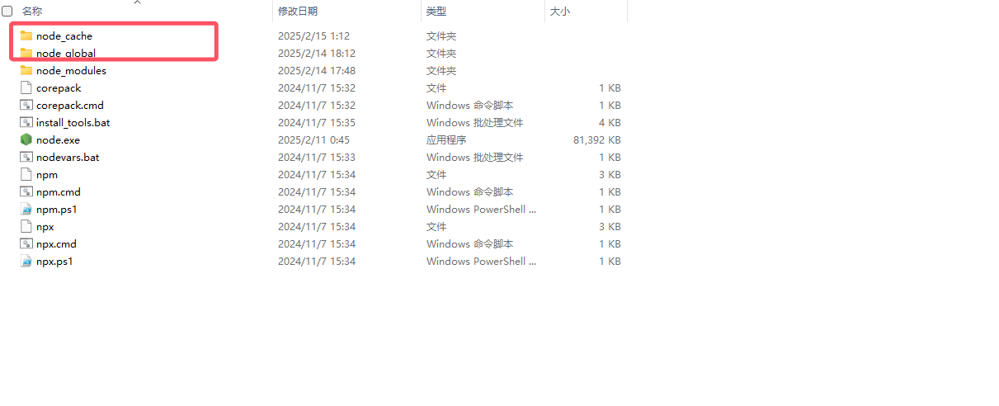
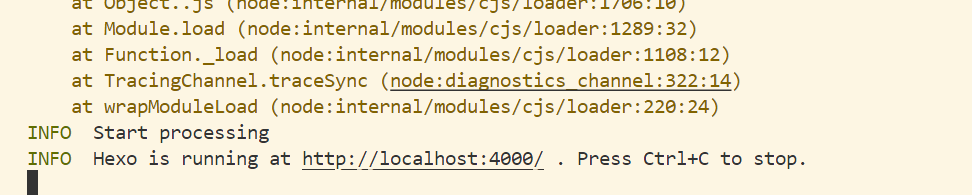
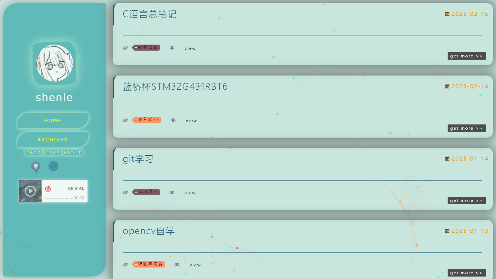

---
title: "hexo配置小记"
date: "2025-02-15 05:56:44"
tags: "小记"
hidden: false
top: false
layout: post
流程
- 安装nodejs、npm (安装nodejs会自动安装npm)
nodjs安装地址
winget install --id OpenJS.NodeJS -e --source winget --location "E:\apps\Nodejs" #命令行安装
node -v # 查看nodejs版本
npm -v # 查看npm版本npm config set registry https://registry.npmmirror.com/ #把npm源换成国内淘宝镜像，下载速度快，永久生效
npm config get registry # 查看npm源，理应输出https://registry.npmmirror.com/ -
- -

)
在安装目录下新建两个文件夹
在cmd窗口输入
- -
npm config set prefix "D:\apps\nodejs\node_global" #指定npm的全局安装包存放目录
npm config set cache "D:\apps\nodejs\node_cache" #指定npm的缓存目录在环境变量的系统变量的path加入node_modules
用户变量的npm的path修改成node_global对应的路径
这里还需要将新键的两个文件夹的权限放开，否则使用npm安装会失败
- git安装
winget install --id Git.Git -e --source winget --location "E:\Git" # 安装git到E:\apps\Git 目录
winget uninstall --id Git.Git -e # 卸载git
git --exec-path # 查看git的安装路径
git --version # 查看git版本- 下载hexo
npm install hexo-cli -g #--global全局安装到之前设置的global文件夹如果是换电脑后重新部署，跳转到重新部署部分
- 搭建github仓库
由于ssh之前设置过，只需要简单搭建一个空远程仓库
- 在apps目录下新建一个hexo文件夹
hexo init
hexo cl;hexo g;hexo s
在本地生成一个静态网址

) 点击4000端口的网址即可访问- 配置_config.yml中的部署信息
# URL
## Set your site url here. For example, if you use GitHub Page, set url as 'https://username.github.io/project'
url: https://github.com/2575451471/2575451471.github.io/ #网址，搜索时会在搜索引擎中显示
root: / #网站根目录
permalink: :year/:month/:day/:title/ #永久链接格式
permalink_defaults: #永久链接中各部分的默认值
pretty_urls:
trailing_index: true # Set to false to remove trailing 'index.html' from permalinks
trailing_html: true # Set to false to remove trailing '.html' from permalinks
# Deployment #部署到github
## Docs: https://hexo.io/docs/one-command-deployment
deploy:
type: git
repository: https://github.com/2575451471/2575451471.github.io.git
branch: main- 配置主题
选择困难症，纠结了很久 最后甲方（自己）还是选回了第一版
jelly主题预览：https://preccrepad.github.io/
jelly主题github仓库:https://github.com/xinyiwang01/hexo-theme-jelly
my show：
)
- 同步博客园
1.将博客园的vscode插件的md生成地址改到hexo的文件夹下
然后将md文章都剪切到hexo文件夹的source/_posts下
这样在一篇文章即可在vscode上同步到两个平台
2.hexo使用Front-Matter(添加在md文档首部)来表示文章信息
---
title: "日记"
date: 2025-02-13 21:17:00
tags: "日记"
hidden: true
top: false # 是否置顶文章（如果主题支持）
layout: post # 文章布局类型，默认为 post，也可以设置为 page 等
---
# 标题而之前写的文章是额外设置
尝试了下添加Front-Matter信息也不会在博客园平台显示，
编写sh脚本进行批量处理，在所有的mdwe文件中添加Front-Matter信息
#!/bin/bash
# 设置目录路径
directory="d:/apps/hexo/source/_posts" # 替换为你的 Markdown 文件目录路径
# 定义要添加的 Front Matter 片头
front_matter="""---
title: \"1\"
date: 2025-02-14 21:17:00
tags: \"1\"
hidden: false
top: false # 是否置顶文章（如果主题支持）
layout: "post" # 文章布局类型，默认为 "post"，也可以设置为 "page" 等
---
<meta name="referrer" content="no-referrer"/>
<!-- more -->
"""
# 遍历目录下的所有 .md 文件
for file in "$directory"/*.md; do
# 读取文件的第一行
first_line=$(head -n 1 "$file")
# 如果文件已经包含 Front Matter，跳过
if [[ "$first_line" == "---" ]]; then
echo "Skipped: $(basename "$file") (already has Front Matter)"
continue
fi
# 在文件开头插入 Front Matter
echo -e "$front_matter\n$(cat "$file")" > "$file"
echo "Processed: $(basename "$file")"
done
echo "All files processed."上面<meta name="referrer" content="no-referrer"/>是为了能使用博客园的图床
使用hexo g;hexo s本地预览后发现文章都是全显示
3.继续编写批处理脚本解决问题
#!/bin/bash
# 设置目录路径
directory="d:/apps/hexo/source/_posts" # 替换为你的 Markdown 文件目录路径
# 定义要插入的行
insert_line="<!-- more -->"
# 定义目标行
target_line='<meta name=referrer content=no-referrer/>'
# 遍历目录下的所有 .md 文件
for file in "$directory"/*.md; do
# 检查文件是否包含目标行
if ! grep -q "$target_line" "$file"; then
echo "Skipped: $(basename "$file") (target line not found)"
continue
fi
# 使用 awk 在目标行下方插入新行
awk -v line="$insert_line" -v target="$target_line" '
{ print }
$0 ~ target { print line }
' "$file" > "$file.tmp" && mv "$file.tmp" "$file"
echo "Processed: $(basename "$file")"
done
echo "All files processed."- 修改cnblogs新md文档的模板
博客园新md文档会有一行# hello world，希望修改成Front-Matter模板
使用vscode打开C:\Users\86177\.vscode\extensions\cnblogs.vscode-cnb-1.8.58-win32-x64这个vscode扩展的文件夹
全局搜索hello
定位到C:\Users\86177\.vscode\extensions\cnblogs.vscode-cnb-1.8.58-win32-x64\dist\extension.js
代码修改后如下
async function hwe(){
const currentDate = new Date();
const year = currentDate.getFullYear();
const month = String(currentDate.getMonth() + 1).padStart(2, '0');
const day = String(currentDate.getDate()).padStart(2, '0');
const hour = String(currentDate.getHours()).padStart(2, '0');
const minute = String(currentDate.getMinutes()).padStart(2, '0');
const second = String(currentDate.getSeconds()).padStart(2, '0');
let e=ln.getWorkspaceUri().fsPath.replace((0,fwe.homedir)(),"~"),r=await mwe.window.showInputBox({placeHolder:"\u8BF7\u8F93\u5165\u6807\u9898",prompt:`\u6587\u4EF6\u5C06\u4F1A\u4FDD\u5B58\u81F3 ${e}`,title:"\u65B0\u5EFA\u535A\u6587",validateInput:a=>{if(a==="")return"\u6807\u9898\u4E0D\u80FD\u4E3A\u7A7A"}});if(r==null)return;let n=new Kt;n.title=r,
n.postBody=`---
title: "文档标题"
date: "${year}-${month}-${day} ${hour}:${minute}:${second}"
tags: "标签"
hidden: false
top: false
layout: post
---
<meta name="referrer" content="no-referrer"/>
<!-- more -->
# 标题
`;
n.isMarkdown=!0,n.isDraft=!0,n.displayOnHomePage=!0,n.postType=1;let i=(await wt.update(n)).id;i>0?(n.id=i,await cn.refresh(),await ps(n,void 0,!0)):ue.err("\u521B\u5EFA\u535A\u6587\u5931\u8D25\uFF0CpostId: "+i)}var F4=require("vscode");async function _we(t){let r=Jt.postCategoriesList.selection.map(s=>s instanceof ds?s.category:s instanceof Aa?s:null).filter(s=>s!=null)??[],n=null;if(t instanceof ds?n=t.category:t instanceof Aa&&(n=t),n===null)return;r.find(s=>s.categoryId===n?.categoryId)===void 0&&r.unshift(n);let i=r;if(i.length<=0)return;let a=i.map(s=>s.title);if(await ue.warn("\u786E\u5B9A\u8981\u5220\u9664\u8FD9\u4E9B\u535A\u6587\u5206\u7C7B\u5417",{detail:`\u5206\u7C7B ${a.join(", ")} \u5C06\u88AB\u5220\u9664`,modal:!0},"\u786E\u5B9A")==="\u786E\u5B9A")return F4.window.withProgress- 增加hidden属性
安装插件
npm install hexo-hide-posts --save在 _config.yml 中添加以下配置：
hide_posts:
enable: true
filter: hidden在文章的 Front Matter 中添加 hidden: true，插件会自动隐藏这些文章。
- 一键配置 在 D:\apps\hexo 目录下创建一个名为 myhexo.sh 的脚本文件。
#!/bin/bash
# 切换到 Hexo 博客目录
cd /d/apps/hexo
# 清除缓存并生成静态文件，然后部署
hexo clean && hexo generate && hexo deploychmod +x /d/apps/hexo/myhexo.sh
再创建.bashrc nano ~/.bashrc
加入alias myhexo='/d/apps/hexo/myhexo.sh'
保存退出，运行source ~/.bashrc
现在，无论在哪个目录下，都可以直接运行myhexo来更新Hexo
- 一些困难
1.在修改_config.yml配置文件时，试图修改网易云音乐播放器
原版是利用网易云的iframe嵌入，但是我修改成歌单播放就会受到平台限制，只能最多显示10首歌曲（外链生成）
尝试使用hexo-tag-aplayer插件，具体配置方法请看https://github.com/MoePlayer/hexo-tag-aplayer
但是前端代码不是很懂，边套边ai也没有实际解决问题，遂放弃，
最终是只放了一首最喜欢的歌在博客上
2.在使用博客园的图床来提供头像时出现了问题，中途它右能正常识别了，没过一会儿直接把图床链接整403了，遂放弃，改本地存头像
3.在尝试增添github等跳转链接时失败，发现还需要在main.styl文件中自定义图标和颜色（倒腾，也不能用图床图片，改本地）
重建
git config --global user.name "你的用户名"
git config --global user.email "你的邮箱@qq.com"
ssh-keygen -t rsa -C "你的邮箱@qq.com"(base) PS E:\apps\hexo> ssh-keygen -t rsa -C "2575451471@qq.com"
Generating public/private rsa key pair.
Enter file in which to save the key (C:\Users\25754/.ssh/id_rsa):
Enter passphrase (empty for no passphrase):
Enter same passphrase again:
Your identification has been saved in C:\Users\25754/.ssh/id_rsa
Your public key has been saved in C:\Users\25754/.ssh/id_rsa.pub
The key fingerprint is:
SHA256:WsM4s5A6oigmuKtzZI4HLzWSVn2tHit8KPmUi696wsg 2575451471@qq.com
The key's randomart image is:
+---[RSA 3072]----+
| |
| |
| . . |
| . o + . |
| .. o = S |
|+.=. ..O . |
|BXo.oo= o |
|@E==o+.+ |
|@O+o=+o |
+----[SHA256]-----+
(base) PS E:\apps\hexo>
```)
放弃重建，回归cnblogs